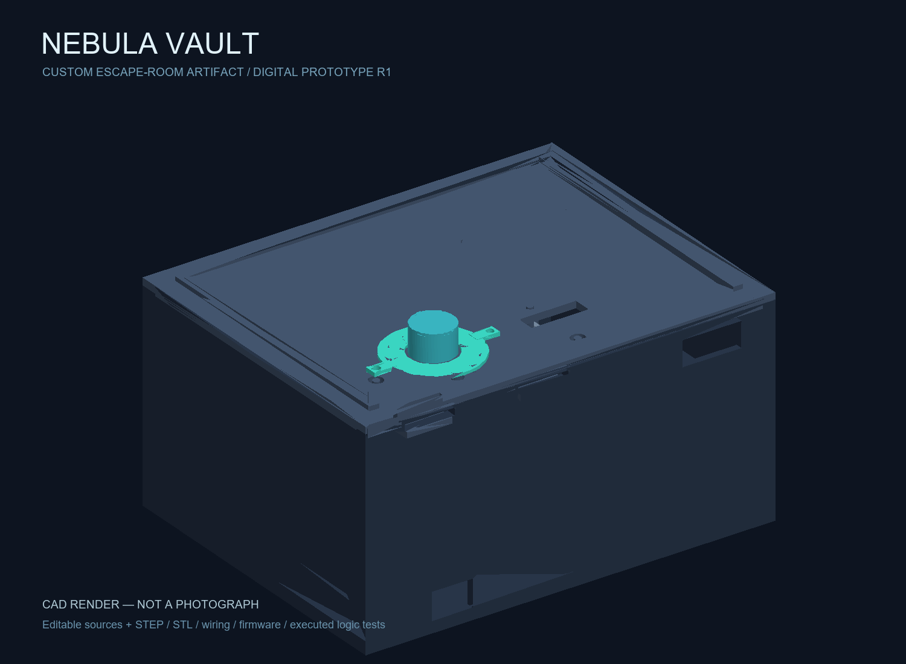
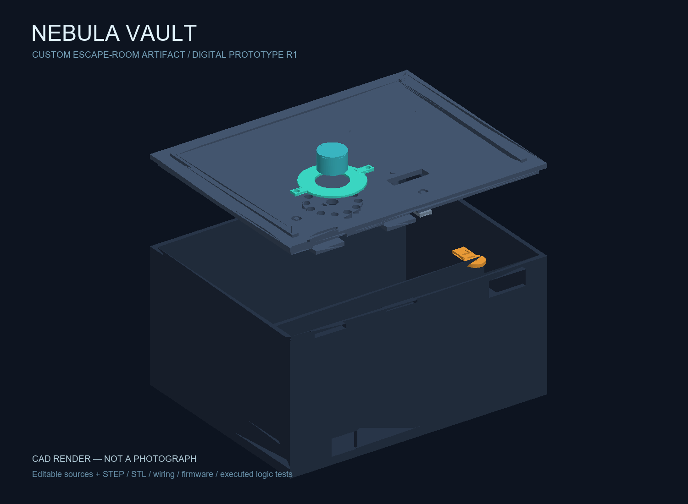
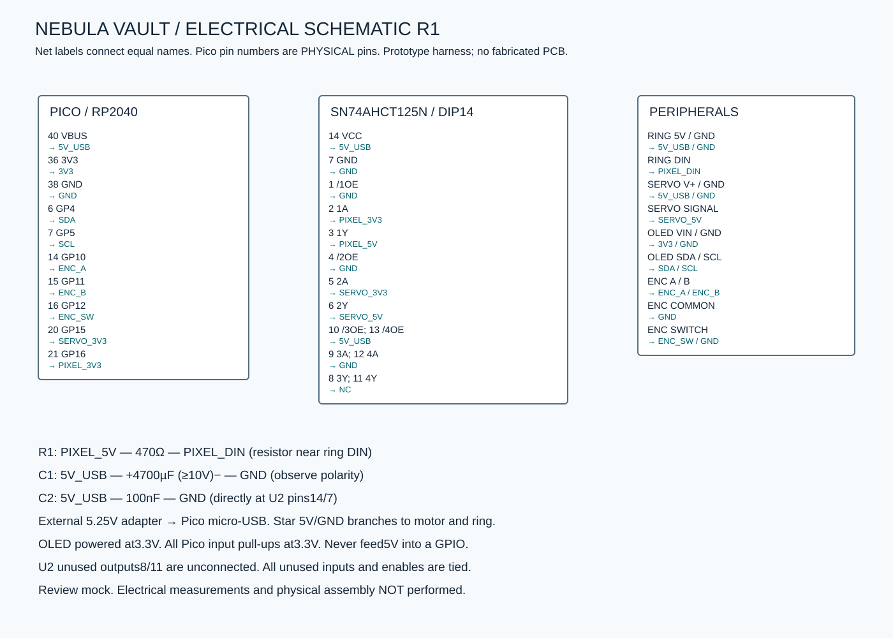

FREESTYLE WEEK / DESIGN SUBMISSION PACKAGE
NEBULA VAULT
Recover the core. Decode three orbital signals, repeat the pulse, and release the hidden mechanical latch.
Yonathan’s original design-stage project. Owner-confirmed personal design time: 20 hours. No physical build, live acceptance or reviewer approval is claimed.

15passing logic tests
7editable printable parts
$77.74priced merchandise
2real vendor carts
Open the package
Mechanics and electronics
The dial, OLED, light ring and servo share a custom enclosure with a separate electronics bay. The firmware separates puzzle logic from hardware control so the actual game engine can be checked on a desktop.


STEP assembly · Parametric CAD source · MicroPython application · BOM CSV · Executed package checks
Costs and boundaries
$77.74 merchandise + $4.99 DigiKey shipping estimate + $0.15 tariff = $82.88 known. Adafruit shipping, sales tax, printing and workshop allocations remain unknown. Budget compliance is not established.
Both priced carts match the supplied BOM. Four labeled videos are prepared from actual project files with narration. The owner confirms 20 hours; session dates and allocations are not invented. Live publication/submission and eligibility remain unverified. No purchase is claimed.
Read START-HERE.md and the audit before using these files beyond design submission review.